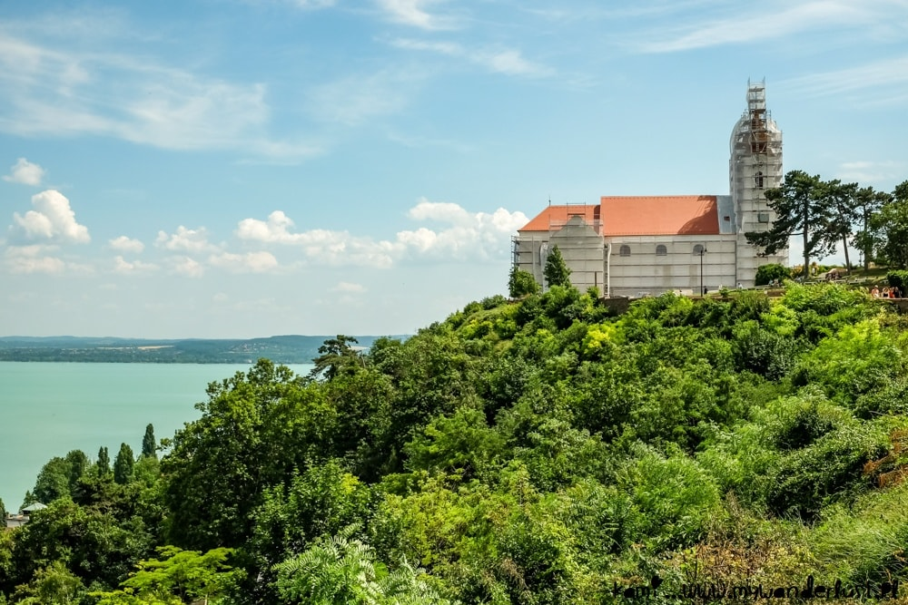

<!doctype html>

<html lang="en">

<head>
  <meta charset="utf-8">
  <title>New Spots in 12 Familiar Places</title>
  <meta name="description" content="This article lists Lonely Planet's 2027 picks for underrated travel destinations. It features photos of the destinations, videos 
  touring specific attractions mentioned and more.">
  <meta name="author" content="Article by Cris Tolomia, Website by Rachel Kebler">


<link rel="preconnect" href="https://fonts.googleapis.com">
<link rel="preconnect" href="https://fonts.gstatic.com" crossorigin>
<link href="https://fonts.googleapis.com/css2?family=Bebas+Neue&family=Libre+Baskerville:ital,wght@0,400..700;1,400..700&family=Oswald:wght@200..700&display=swap" rel="stylesheet">

  <!-- Link to your JS file -->
  <script src="scripts/script.js"></script>

  <!-- Link to your CSS file -->
  <link rel="stylesheet" href="css/style.css">


<body> 
<style type="text/css">


.oswald-<uniquifier> {
  font-family: "Oswald", sans-serif;
  font-optical-sizing: auto;
  font-weight: <weight>;
  font-style: normal;
}

</style>
</body>


<a name="top"></a>


</head>

<h1> New Spots in 12 Familiar Places </h1>
<h2> <a href= "https://www.lonelyplanet.com"> Lonely Planet's</a> top underrated travel destinations across the world for 2027 </h2>
<p> Original article by Cris Tolomia - Last updated Oct. 23, 2026 </p>

<div></div>

<div style="width:1005px; padding: 10px; align-content: middle; background-color:#ADD8E6;">


<p style="color:#fffffff;">
Credit: Kami & the Rest of the World </p>

</div><div></div>

<p> 
Picture someone mapping out next year's getaway and landing on the same
few famous names that fill every social feed. Honeymooners keep choosing
Santorini. Families keep settling on Barcelona. Each decision makes sense
alone. Stacked together, though, those identical choices funnel enormous
numbers of people into a short list of locales, and the vacation someone
imagined can turn into a slog of long lines, sold-out hotels, and elbow-
to-elbow sightseeing. Anyone with limited time off and a fixed budget has
a stake in how those decisions play out. Where a trip lands shapes every
hour spent away from home.
</p><p>
Rooms on the Amalfi Coast book up about a year in advance, a sign of how
close the best-known hotspots run to capacity. Overtourism worries many
regions around the world. The strain lands on two groups at once.
Travelers $TRV +0.51% compete for scarce lodging, while the places hosting
them shoulder all that demand. Planning a year ahead strips the
flexibility out of a holiday before it begins. A smarter answer starts
with a different question about where a comparable experience might wait,
a short distance from the marquee attraction yet free of its pull.
</p><p>
Lonely Planet tackles that crush by steering readers toward the lesser-
known neighbors of places they love. Chamidae Ford $F +0.77%, a writer at
the publication, gathered recommendations from fellow staff members, and
each entry carries the name and job title of the colleague behind it. The
selections reflect staff opinion and editorial judgment. No scores,
visitor counts, or price data decide which spots appear or in what order.
The publisher concedes that no featured spot counts as undiscovered,
adding that nowhere on Earth does. Even so, each one rewards the journey,
it argues. A shared template organizes the entries, though not every one
fills every field. The template explains why people overlook the place,
points to a busier alternative, and identifies who will enjoy it most.
Further fields suggest the best season, outline how to get there, flag a
highlight worth seeking out, and close with a practical tip from the
recommender.
<br></br></p>
<div></div>
<h2> Bhutan </h2>
<p>
Bhutan holds a negative carbon footprint, a status few countries share,
and destination editor James Pham picks it for mountain lovers who want
room to roam. Pham notes that the country makes protecting its landscapes
a priority. A place that absorbs more carbon than it emits gives anyone
uneasy about the emissions behind their travel a reason to book it.
</p><p>
Nepal draws the bigger share of Himalayan hikers, and Pham proposes Bhutan
as the alternative. Outdoor enthusiasts meet far fewer fellow walkers on
Bhutan's trails than in neighboring India or nearby Nepal, he says. The
Trans Bhutan Trail by itself covers 403 kilometers. Jhomolhari Base Camp
and the Snowman Trek give visitors on foot two more named options to plan
around. A walker on any of the three can expect quieter paths than the
busier circuits next door offer.
</p>
<div style="width:1005px; padding: 10px; align-content: middle; background-color:#ADD8E6;">

<p style="color:#fffffff;">
Credit: Earth Trekkers </p></div>
<p>
Trekkers form one slice of Pham's intended audience. He names culture
seekers, nature lovers, photographers, and people drawn to Buddhism and
spirituality. A list that broad suggests Bhutan rewards guests who never
lace up a boot.
</p><p>
Autumn, from September to November, brings clear skies and sweeping views
of the high peaks. Prices drop from June to August, during the monsoon.
Travelers $TRV +0.51% with flexible dates face a trade-off between lower
rates and the crisper vistas of fall.
</p><p>
No direct flights link Bhutan with the Western Hemisphere. Pham advises
flying into Delhi, the nearest major international air hub. Kathmandu and
Kolkata supply further connections. Bangkok works as one of the easier
gateways from Southeast Asia. Anyone leaving the Americas should budget
for at least one change of planes before the last leg.
</p><p>
Taktshang Goemba, the cliffside monastery known as Tiger's Nest, is the
one sight Pham says no one should skip. He promises it is "as impressive
as you think." The monastery perches on a cliff face, and its position
supplies much of the drama. A post-monsoon trip gives the best odds of
seeing that perch against an unclouded range.
</p>
<h2>Vendée</h2>
<p>
Vendée, France, keeps its sunshine into September, a month that Digital
Editor Ann Douglas Lott calls lovely and far less crowded than summer.
Coastal swimming drives the summer high season. Holding off until
September trades that rush for open sand under skies that stay bright.
</p><p>
Seafood lovers come first among the travelers Lott expects to enjoy
Vendée. She also steers outdoorsy visitors and fans of quaint little
European towns toward the area. None of those three groups depends on the
peak swimming months, so the quieter stretch suits all of them.
</p><p>
Sardines at Le Banc de Sardines open her list of things to try. Residents
count the spot as a favorite, so a meal there puts diners where locals
eat. Her second pick moves outdoors. She recommends a bike ride along Ã￿le
d'Yeu, an outing suited to the active audience she has in mind. Between
them, the two suggestions serve her first two groups, one at the table and
one in the saddle.
</p><p>
A rental car opens up Vendée, Lott advises, easing both the journey in
and the exploring once there. Wheels let a visitor string together a
sardine lunch, a ride on Ã￿le d'Yeu, and a stroll through a small village
on a personal schedule.
</p><p>
The Passage du Gois, a causeway at Beauvoir-sur-Mer, frames a sunset scene
for anyone who lingers into the evening. Lott's picks add up to a
September road trip, one that runs on timing and mobility more than on
hours spent in the sea.
</p>
<h2>St. Augustine</h2>
<p>
St. Augustine fits centuries of history and local lore into a 144-block
Historic District, and Senior Marketing Manager Amy Nichols tells
travelers to explore its distinct past. Spanish-inspired architecture
frames the streets, and shops line the cobblestones. Nichols likens the
effect to strolling a European village without leaving the U.S. Americans
who crave Old World lanes can find them on a domestic trip.
</p><p>
Nichols calls the city a Florida destination that earns far less credit
than it deserves. Its appeal stacks three draws in one place: aging
buildings, local legends, and beaches she describes as beautiful.
Jacksonville, the closest major airport, gives arriving travelers an easy
jumping-off point.
</p><p>
Ghost hunters share billing with heritage fans and beachgoers among the
travelers Nichols expects to enjoy St. Augustine most. The city embraces
its haunted reputation and steers guests toward ghost tours, eerie
landmarks, and legends best explored after dark. Local storytelling works
two shifts, fueling daytime wandering and nighttime scares. The same
centuries that fill the Historic District supply the material for the
city's spookier side.
</p><p>
The Lightner Museum glows against the night sky during the Light of Nights
festival. The illuminated building gives evening strolls a lure beyond the
ghost tours. St. Augustine's after-dark offerings run from eerie to
festive.
</p><p>
Anastasia State Park holds the beach Nichols singles out, a stretch of
white sand facing the Atlantic. Sand along this coast tends toward darker
shades. The pale shoreline stands out as a result. A beach day here
delivers a color the neighboring coastline lacks.
</p><p>
Each audience Nichols names finds its own anchor in the city. Heritage
buffs head for the Historic District, beachgoers claim Anastasia, and
ghost hunters fill the evening tours. A group with mixed tastes can share
one trip without splitting up. Days can split between cobblestones and
sand, with nights left for legends and lights.
</p>

<h2>Tbilisi</h2>
<p>
Georgia's Qvevri wine traces its roots back 8,000 years, and Marketing
Director Bridget FitzGibbons urges anyone bound for Tbilisi to try it. She
describes the technique as one of the oldest forms of winemaking in human
history. Winemakers in Georgia crush the grapes and pour the juice, along
with the skins, stalks, and pips, into a Qvevri. They then seal the vessel
and bury it beneath the earth. The Qvevri itself is an egg-shaped
earthenware jar that holds the wine from its making through aging and
storage. Families, neighbors, friends, and relatives hand the craft down
and join forces for communal harvests and winemaking.
</p><p>
Khachapuri, a cheesy bread, earns the label life-changing in FitzGibbons'
entry, and khinkali, juicy dumplings, give the table a second local
staple. The two dishes make the kitchen as strong a lure as the vintages
resting underground.
</p><p>
  <div style="width:565px; padding: 10px; align-content: middle; background-color:#ADD8E6;">
<iframe width="560" height="315" src="https://www.youtube.com/embed/nPgfP06XV1U?si=Bq_J8fuSPMGIT3I-" title="YouTube video player" frameborder="0" allow="accelerometer; autoplay; clipboard-write; encrypted-media; gyroscope; picture-in-picture; web-share" referrerpolicy="strict-origin-when-cross-origin" allowfullscreen></iframe>
<p>Credit: Nat Nata on YouTube </p></div>
<p>
Tbilisi rewards travelers on foot as a walkable riverside capital, with
mountain treks and vineyard country within reach. Soviet-era remnants add
another layer to the city. A cable car carries visitors up to Narikala
Fortress, and the Abanotubani sulfur baths offer a soak after a day on the
move. FitzGibbons spent eight days between the capital and the
countryside, a stretch long enough to take in both.
</p><p>
Italy and France cost more, according to FitzGibbons, who pitches Georgia
as a swap for two destinations that some people call "overtouristed."
Anyone planning a wine holiday can skip those familiar names, pay less,
and sample Qvevri wine at its source.
</p><p>
Summer through late fall opens the best window, leaving time to see the
highland towns before winter arrives. Most flights to Tbilisi connect
through Istanbul, a layover FitzGibbons welcomes as a chance to stop in
Turkiye, another country she loves. A Tbilisi trip can double as a two-
country journey for anyone willing to stretch the connection into a stay.
</p>
<h2>Lake Balaton</h2>
<p>
Budapest steals the spotlight from Lake Balaton, even though Hungarians
love to spend their summers on its shores, according to Destination Editor
Zara Sekhavati. Generations of Hungarians have chosen holidays along the
lakeshore. The contrast points to a place with deep local loyalty and a
smaller profile among visitors who stick to the capital.
</p><p>
Sheer size leaves the lake room for several distinct personalities, and
Sekhavati matches different stretches of shore to different interests.
Siófok pulls in fans of Balaton Sound, an electronic music festival.
Tihany owes its reputation to lavender fields. A handful of castles stand
along the water, among them Szigliget, which gives history lovers their
own reason to make the journey. The southern shore has built its name on
family-friendly beaches. Parts of the northern coast have earned the
nickname "Hamptons of Hungary" from some admirers.
</p><p>
Sekhavati recommends the lake to festivalgoers, history buffs, families,
and anyone seeking a wellness break. Spa-minded guests have an added
option nearby at Lake HévÃ-z, which Sekhavati describes as the largest
natural medicinal thermal lake in the world. The range means a single week
can mix a night of electronic music, a castle visit, and a soak in thermal
water without leaving the region.
</p><p>
June to August marks the ideal window, and Sekhavati frames Balaton as a
destination built for the warm months. Rail service links Budapest to the
lake, and Balatonfüred sits less than two hours away by train. The short
ride makes a day excursion workable for anyone based in the city.
Balatonfüred counts among the most popular vacation towns on the lake. A
traveler can sample the shoreline from a Budapest base and commit to a
longer stay once a favorite stretch emerges.
</p><p>
Peak season and the local getaway crowd overlap on the calendar. A
midsummer trip means sharing the sand with Hungarians on their own time
off.
</p>
<h2>India's Northeast</h2>
<p>
India's Northeast stretches across eight states yet draws far fewer
tourists than the crowded Golden Triangle of Delhi, Jaipur, and Agra.
Destination Editor Akanksha Singh champions the region as a fuller, truer
portrait of India than that well-worn circuit can offer. Seven of those
states carry the "Seven Sister" nickname: Arunachal Pradesh, Assam,
Manipur, Mizoram, Meghalaya, Nagaland, and Tripura. Sikkim completes the
roster.
</p><p>
Eight states set against three cities shows how much of the country the
standard itinerary skips. Singh pitches the Northeast at adventurous
travelers and at anyone hungry for a taste of everything. The sheer spread
of territory explains why both groups fit. Sikkim, the one state outside
the Seven Sisters, offers Rumtek Monastery in Gangtok, where monks gather.
Variety on that scale suits an explorer who wants several kinds of trip
folded into one.
</p><p>
Nature and wildlife headline the Northeast's don't-miss list. Singh
singles out Manas National Park, along with the one-horned rhinos of
Kaziranga. Rhino spotting and park outings can share an itinerary with
monastery visits, a mix that delivers the sampler Singh promises.
Encounters of that caliber add an outdoor dimension that a three-city
circuit cannot match.
</p><p>
November through February makes the ideal window, Singh says, with weather
she pegs as Goldilocks-perfect, neither too hot nor too cold. Planners get
one clear season to target across all eight states, a useful constant amid
such diverse ground.
</p><p>
Kolkata, also known as Calcutta, hosts the closest airport for
international flights, yet Singh advises that most arrivals fare better
coming in from New Delhi. Delhi doubles as a corner of the Golden
Triangle. A newcomer landing there can sample the busy circuit before
heading toward the quieter Northeast. Guwahati, the capital of Assam,
serves as the area's chief transport hub. Singh expects most visitors to
pass through the city several times while catching connections.
Itineraries across the eight states hinge on Guwahati's links, which makes
the city a fixture of any route through the region.
</p>
<h2>Methven</h2>
<p>
Methven's Å￿puke Thermal Spa heats its pools with solar power, and an
adults-only section faces the Southern Alps. The sun supplies every
degree, with no help from geothermal sources underground. Destination
Editor Jess Lockhart recommends Methven as a calmer alternative to Hanmer
Springs, which she finds busy and noisy. Her pick swaps that commotion for
views of the peaks from the water.
</p><p>
Mount Hutt sets the rhythm of the year in Methven. Snow turns the town
into a base for skiers, and summer hands it to mountain bikers and hikers.
The cold-season rush runs from June to October, according to
newzealand.com. Lockhart sees no wrong time for a trip and returns at
least twice a year. Her habit suggests the town holds its appeal across
both halves of the calendar.
</p><p>
Christchurch sits 75 minutes from Methven by car, and Hanmer Springs lies
110 minutes from the city. The shorter haul from Christchurch leaves more
of a weekend for the slopes and the pools. Winter brings one caution for
anyone driving there. The road up Mount Hutt climbs at a steep grade, and
Lockhart urges drivers to take care on it. The heaviest traffic arrives in
the same months the road turns most treacherous.
</p><p>
Rakaia Gorge hosts jetboat rides, and the Washpen Falls trail fills about
three hours. The surrounding area adds ice skating at Staveley, hot air
ballooning, and golf, either in Methven or at Terrace Downs. Cafes and
restaurants sit within walking distance of the village motels. Guests can
leave the car parked after a full day outdoors and reach dinner on foot.
Å￿puke makes a fitting finale after a gorge ride or a waterfall trek.
</p><p>
Methven's tranquility depends on timing. Its winter crowds and Lockhart's
warning about the access road suggest the quietest soak waits for the
warmer months.
</p><p>
<h2>Puglia</h2>
<p>
Puglia matches the Amalfi Coast and Cinque Terre on beaches, food, and
history, according to Director of Audience Serina Patel. Italy overflows
with celebrated cities and coastlines, and a region up against two of the
country's most famous seaside stretches drops off many itineraries. Patel
argues travelers should not pass it over. Puglia delivers the same pull of
sea, table, and old stone that draws people to Italy's busiest resort
towns.
</p><p>
Puglia's location in the far south keeps the weather mild deep into the
shoulder season. Patel recommends April through June or September through
October, two windows that dodge both the summer peak and the harshest
heat. Together those windows add up to five months of comfortable
sightseeing outside high summer. Thinner crowds on the sand and cooler
afternoons make the shoulder months the smarter bet for anyone who wants
the shore at its most pleasant.
</p><p>
Puglia's past survives in the trulli of Alberobello, limestone dwellings
whose roofs rise in pyramids, domes, or cones. Builders set the
whitewashed dry-stone walls on bare bedrock and used no mortar or cement.
Each roof pairs an inner dome of stone with a watertight outer cone of
limestone slabs. Some trulli served as short-term field shelters and
storehouses, while others housed agricultural laborers and owners of small
plots. Rural trulli dot the Itria Valley, which runs from the edge of the
Murge plateau to where the Salento peninsula begins and takes in the
villages of Locorotondo, Cisternino, and Martina Franca. Dry-stone
building goes back several thousand years across the Mediterranean, but
the trulli style of construction is specific to the Itria Valley.
Alberobello holds the densest and best-preserved cluster of these homes.
</p><p>
A masseria, or working farm, lets food travelers learn where Puglia's
ingredients come from and meet the people who live nearby, Patel suggests.
An overnight stay links the cooking on the plate to the fields and
neighbors behind it. Swimmers can paddle inside the Grotta della Poesia,
which English speakers call the Poetry Cave.
</p>
<div style="width:1005px; padding: 10px; align-content: middle; background-color:#ADD8E6;">

<p style="color:#fffffff;">
Credit: Posarelli Villas </p></div>
<p>
Patel pitches Puglia to food fanatics, beach lovers, and history buffs
alike. A group with split interests can share one base and still fill its
days with farm meals, cave swims, and trulli villages.
</p><p>
<h2>Zimbabwe</h2>
<p>
Zimbabwe offers a more affordable safari than Botswana, according to
Digital Editor Chamidae Ford $F +0.77%. Ford grants that Botswana
impresses. The argument for its neighbor turns on access. Wildlife
sightings and time in the bush arrive without much struggle in Zimbabwe,
by Ford's account. A traveler can spend more of the trip watching animals
and less of it hunting for them.
</p><p>
First-time safarigoers and adventure seekers make up the audience Ford has
in mind. The two groups gain from different parts of the pitch. A newcomer
can test whether safari travel suits them at less expense than Botswana
demands. An adventure seeker gets a quick route to big game and, as Mana
Pools shows, more than one way to pursue it.
</p><p>
Most trips begin with a flight into Victoria Falls, beside the UNESCO-
listed stretch of the Zambezi River. From there, most safaris shuttle
guests to camp aboard small puddle-jumper planes. Driving can take an
exhausting amount of time where roads lack pavement or prove hard to
navigate. A first-timer wary of a long haul over unpaved track reaches
camp without that ordeal. Even the cheaper choice, then, tends to include
time in the air between the airport and camp.
</p><p>
Mana Pools National Park gives Zimbabwe its sharpest point of difference.
The park sits on the Zambezi, the same river that flows past the Victoria
Falls gateway. The park breaks from the classic picture of a safari on
open plains. Visitors can paddle a canoe downriver or head out on foot for
a walking safari. Both options trade the vehicle for a paddle or a pair of
boots, an approach suited to the adventure seekers in Ford's audience.
</p><p>
Elephants wading in the Runde River beneath the Chilojo Cliffs add a
second river landscape to the picture. Anyone who picks Zimbabwe to save
money ends up with river and cliff scenery that a standard grassland tour
leaves out.
</p><p>
<h2>Quito</h2>
<p>
Quito's old town received UNESCO World Heritage status in 1978, which made
Quito the first city to earn the designation. Even so, many travelers
treat Quito as a brief layover on the way to the Galapagos. Digital Editor
Chamidae Ford $F +0.77% argues that the city and the rest of Ecuador
reward anyone who stays to explore.
</p><p>
Ford pitches Quito as a stand-in for the Galapagos. The islands impress,
Ford concedes, but they can strain a budget and demand effort to reach.
Quito answers with a towering landscape, Spanish colonial architecture,
and food Ford calls delicious. Culture and architecture fans stand to gain
the most from the swap. Their natural starting point is the old town, the
district behind the city's World Heritage distinction.
</p><p>
Quito's common role as a stopover works in its favor. Visitors bound for
the islands can stretch a short stop into a full stay without redrawing
their route.
</p><p>
Quito sits close to the equator, and its climate holds steady as a result.
Ford says a trip at any time of year works. The June-to-September dry
season adds clear Andean skies for anyone with flexible dates. Flights
land at Mariscal Sucre International Airport, 30 miles from the city
center.
</p><p>
Festivals fill Quito's calendar from February through December. Quiteños
celebrate Carnaval in February with parades and water fights that spill
across town. Penitents dressed in purple robes lead the Semana Santa
processions in the days before Easter. December brings the Founding of
Quito Festival, when the city shifts into what Ford calls "party mode."
Carnaval and the founding celebration both land outside the dry season.
Travelers $TRV +0.51% who build a visit around one of them give up the
clearest skies. Quito's weather varies little across the year, which keeps
that sacrifice small. Quito offers enough to justify a journey on its own,
with or without the islands.
</p><p>
<h2>Bolivia</h2>
<p>
Bolivia's Torotoro National Park holds about 2,500 dinosaur footprints,
and Digital Editor Sarah Stocking singles out the park as the stop no trip
to the country should miss. Canyons carve through the same landscape, and
swimming holes wait inside them. A day in Torotoro can open on prehistoric
tracks and close with a swim. The pairing turns a fossil site into a full
outing that tests stamina as much as curiosity.
</p><p>
Stocking pitches Bolivia as a swap for Brazil, and she stresses the gulf
between the two. Her case rests on difference and value at once. Bolivia
reveals another face of South America, one where excursions, lodging, and
meals all come at affordable prices. Choosing it over Brazil trades a
better-known route for a contrasting one that keeps daily spending in
check.
</p><p>
Budget travelers, wildlife lovers, and adventure seekers form the audience
Stocking has in mind. Cheap beds and food let a modest fund stretch across
a longer stay. Torotoro's gorges reward anyone chasing a physical
challenge, and the country's jungle hikes suit those hoping to see
wildlife up close.
</p><p>
Santa Cruz beats La Paz as an arrival city, according to Stocking. Flights
into Santa Cruz cost less, and more of them land there. The Santa Cruz
route carries a health benefit as well. First-time visitors who start in
Santa Cruz give their bodies time to adjust to altitude, which can prove
difficult. A later leg to La Paz lets the climb happen in stages. The
lower fare and the gentler start point the same way, making the gateway an
easy call.
</p><p>
Bolivia's climate ranges from steamy Amazon $AMZN +1.61% trails to snow in
La Paz, and Stocking advises packing for both extremes. Each bag has to
handle humid heat and cold air. An inexpensive itinerary here can move
from rainforest to wintry city streets, giving one destination the variety
of several.
</p>
<h2>Mid-Wales</h2>
<p>
The Welsh language movement took root in Mid-Wales during the 1960s, and
Copy Editor Tasmin Waby points to that heritage as the region's chief
appeal for culture seekers. King Charles III studied Welsh at university
in Aberystwyth. His lessons tie a royal name to the same region where the
movement started. Waby describes a bond that visitors form with the land,
its history, and its myth and magic. Her pitch leans on atmosphere over
attractions, which suits anyone who wants a trip to carry meaning.
</p><p>
  <div style="width:565px; padding: 10px; align-content: middle; background-color:#ADD8E6;">
  <iframe width="560" height="315" src="https://www.youtube.com/embed/ISNm_2l8Y0k?si=WBOqaVH60Jly3q6R" title="YouTube video player" frameborder="0" allow="accelerometer; autoplay; clipboard-write; encrypted-media; gyroscope; picture-in-picture; web-share" referrerpolicy="strict-origin-when-cross-origin" allowfullscreen></iframe>
  <p> Credit: VonMeetsWorld on Youtube </p></div>
  <p>
Aberystwyth, a town in Ceredigion, houses the National Library of Wales,
the Ceredigion Museum, a castle, and the Aberystwyth Arts Centre. Its
cliff railway comes with a camera obscura. The Vale of Rheidol Railway
climbs the valley from Aberystwyth to Devil's Bridge and its waterfalls. A
single base in town covers books, art, and a valley excursion by train.
</p><p>
The Dyfi Biosphere, the only one in Wales, spans a river estuary and a
coastal dune plain, according to Visit Wales. The Ynyslas dunes and the
raised peat bog Cors Fochno lie within it. At Borth, petrified tree stumps
surface from the water at low tide near a long sandy beach with cafés.
The Elan Valley reservoirs sit in the Cambrian Mountains amid moorland,
woods, farmland, streams, and bogs. Coast, wetland, and mountain water
give the scenery a range to match the area's culture.
</p><p>
June to September brings longer days and warmer weather, and Waby notes
that Mid-Wales escapes the crowds that fill its more popular neighbors.
Aberaeron, on the coast, has its own harbor. Llanerchaeron, a National
Trust property inland from Aberaeron, contains a Welsh villa, farm
buildings, and a walled garden of old fruit trees and herbs. Summer
travelers here gain long evenings and open space, two things the busier
places next door cannot promise in the same months.
</p>

<h1 class="rtt"><a href="#top">Return to Top</a></h1>

</div>
<body>
</body>

</html>
